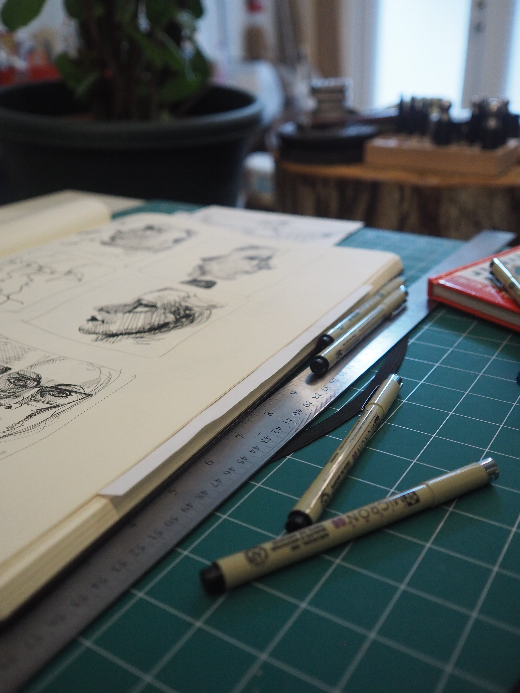
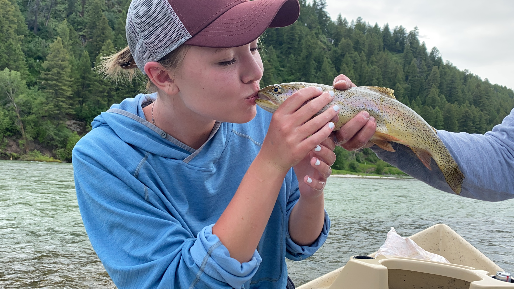

“There is a fine line between challenging yourself and overwhelming yourself.” - Brittany Burgunder
No one knows this better than your's truly. I'm a girl with an insane amount of interests and absolutely no time to do any of them. That overwhelming feeling comes with sitting on one's bed and not knowing whether to pick up the guitar on the wall, to sketch a portrait, to take a nap, to build a poster, or to actually get some homework done for once.
Don't worry though, I love life. I deeply enjoy learning (although I usually find school more rigorous than I would prefer but hey, what's new). I enjoy creating, especially through sketching and graphic design. I'm sure it comes as no surprise that I also love to build and design websites! I'm very passionate about the ability to use code and design to create something of functional beauty. I especially enjoy designing elements of a website on Adobe to achieve my ideal aesthetic visual.
As previously mentioned, I play the guitar although I'll admit I don't do it very well. I can also play the piano and taught for a couple years before moving to Provo. I danced ballet for years and became quite good, landing lead roles and dancing four or five times a week. I regularly sketch and paint, and I especially enjoy anatomy studies in pencil and pen. I work as a graphic designer which I adore, largely because it helps me to hone my Adobe skills. I occasionally design advertisements and posters in my free time. I find design to be a great tool to express myself visually.
I enjoy cheering for the Jazz and I love nothing more than debating obscure Marvel theories with others. I could genuinely go on and on, I love all things MCU.
The Great Outdoors
You may be wondering: Alaina, do you ever get out into the world? Can you handle the elements or are you weak? Worry no more, dear reader. Though Paul Bunyan might scoff at me, I am proud to report that I am well capable of enjoying God's great gift to man: our planet Earth.
I'm kidding. I know that no one was curious about that, but I didn't have a good segway into this section so you get what you get. I love spending time outdoors, especially in the mountains! Some of my favorite memories from my youth are backpacking and fishing trips with my dad. There's nothing I love more than summer camping. Give me a quiet river and a fly-fishing friend and it's a perfect day. That's one of the things I miss most about being home, actually: spending quality time outside with the people I love.
Now that the weather has turned cold, I'm much less enthusiastic about getting outside. I have extremely poor circulation, which means your girl is always cold as soon as September hits. I love the season but the amount of layering I have to do is just madness. That's alright thought, the mountains are gorgeous and there are Christmas lights everywhere!
Music Junkie
I'd be selling you short if I didn't include my passion for all things music in here. I've previously mentioned my ability to play a couple instruments but my love for it is much deeper than that. I sung my first performance at the age of four and since then I've been singing and creating musically. My childhood dream was to one day produce songs that the whole world would know and to perform in front of massive audiences. Though crippling stage fright definitely threw a wrench in my plans, I continue to pursue musical learning.
To witness more of my abilities, please click here.
I find myself escaping to my playlists every day. Though I definitely listen to way too much, its comforting to have something to relate to, especially when life gets tough. There's also something to be said about the power of connecting with someone else over a song. That sort of thing is what makes music so special to me.